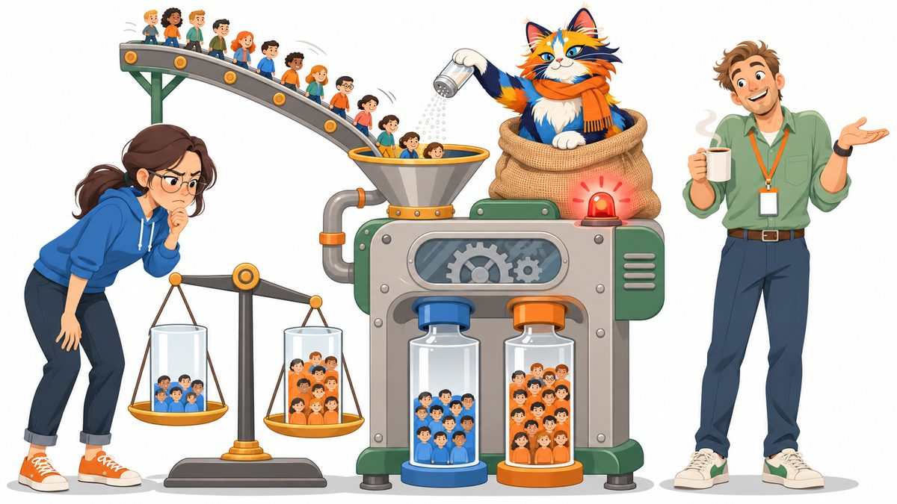

ШАДПрикладная статистика для аналитика
Занятие 5. A/B-тесты в индустрии
Интерактивная версия занятия: девять блоков, как в лекции. В задачах можно проверить ответ числом, решение спрятано под «Решением», а там, где идею лучше видно на графике, — игра.

Оглавление
- 1
Разбиение и SRM
Хеш с солью, лотерея призыва 1969 года, 50 600 против 49 400 и антифрод, съевший лучших клиентов.
- 2
Проверка критерия симуляцией
1 000 A/A и 68 прокрасов: держит ли критерий и какая у него мощность.
- 3
Единица наблюдения
Делим пользователей, считаем по показам — и CTR прокрашивает A/A в 15% случаев.
- 4
Дельта-метод, линеаризация, бакеты
Три честных способа посчитать SE для ratio-метрики.
- 5
Кого мы потеряли при join
4% или 13%, витрина в «Десертах» и подписчики, которые тратят на 40% больше.
- 6
Бутстрап
Интервал для медианы чека своими руками и когда хватит t-теста.
- 7
Подглядывание
14 взглядов — 22% ложных прокрасов, О'Брайен–Флеминг и переоценка ранних побед.
- 8
A/B на аудитории
Игра «Сколько лет?» и полный пайплайн на ваших ответах.
- 9
Выбросы и блиц
Винзоризация, корпоратив на 300 капучино и семь вопросов с собеседования.
- 10
Итоги занятия
Восемь главных мыслей.